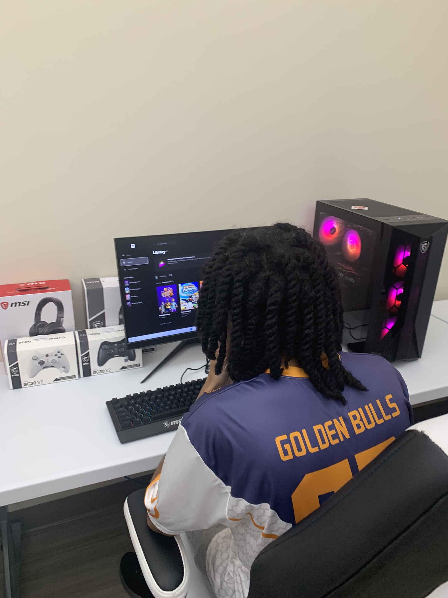
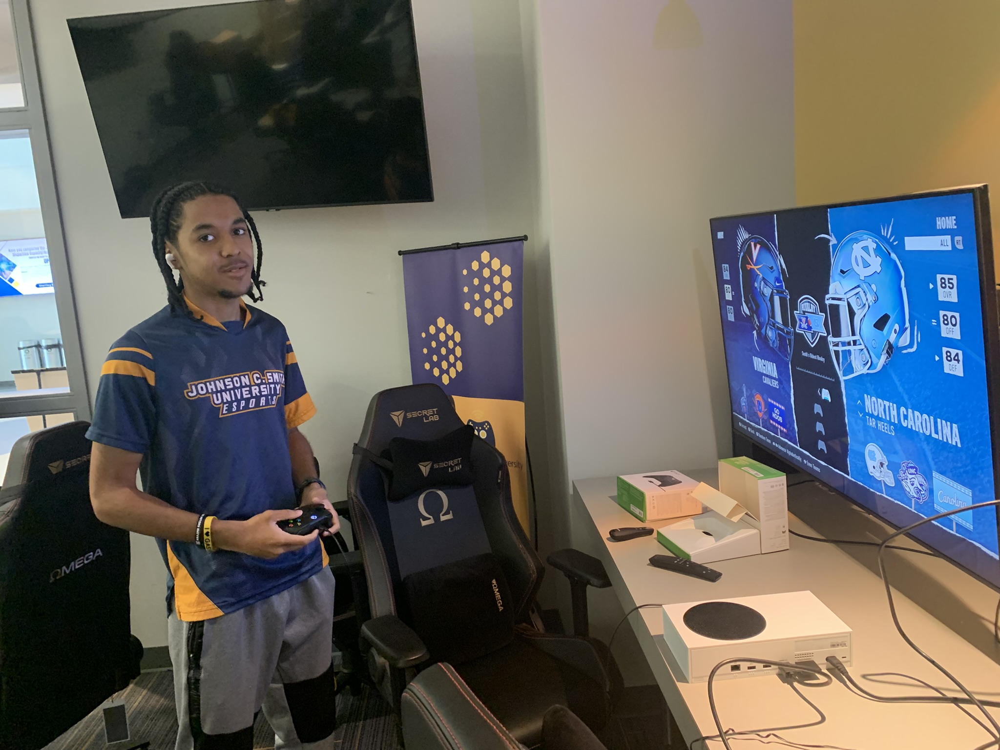
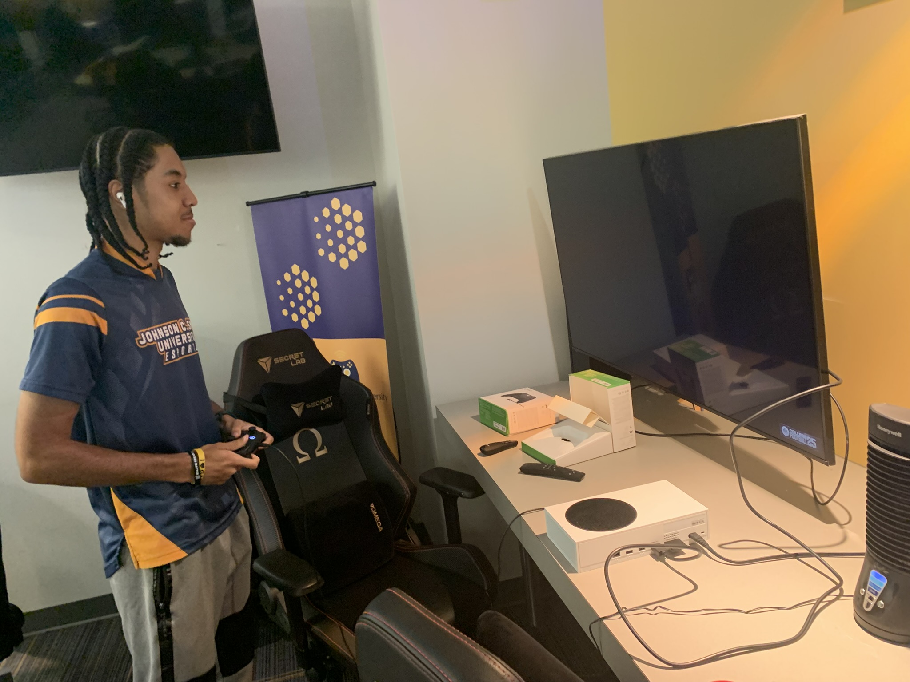
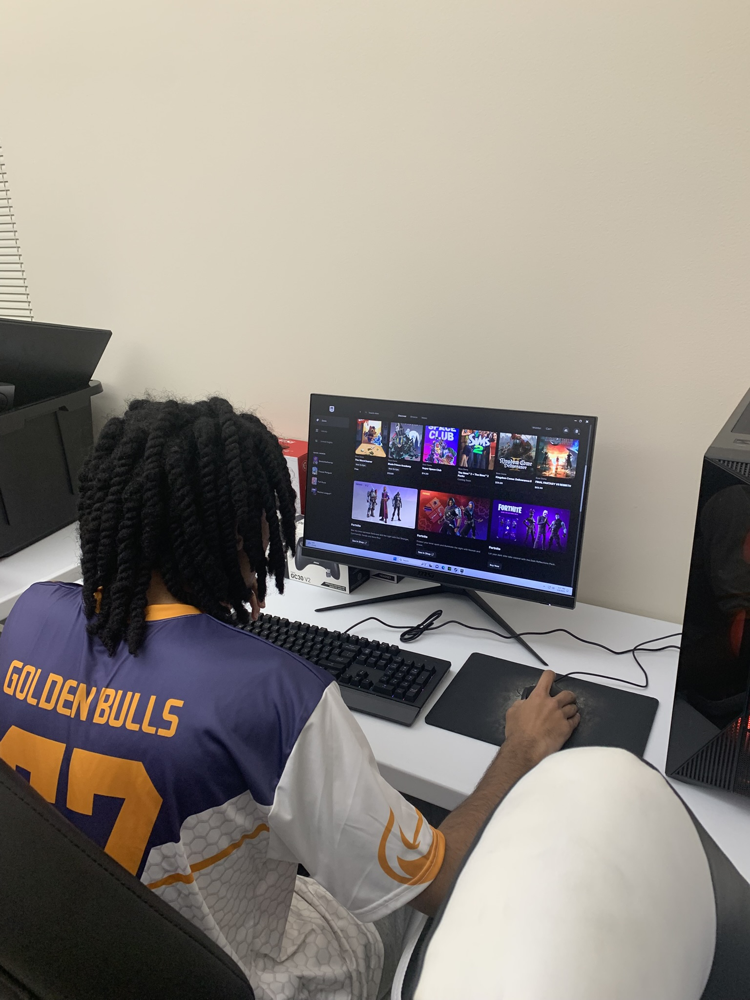
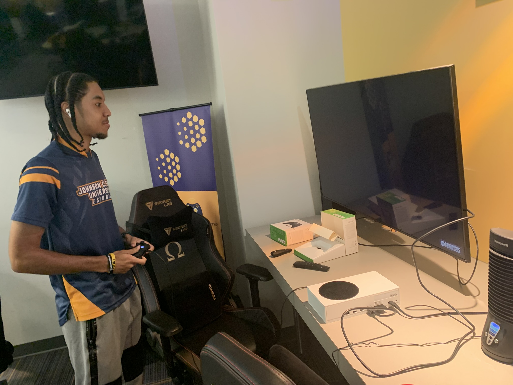
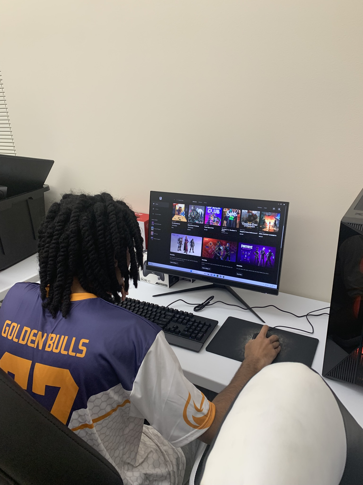
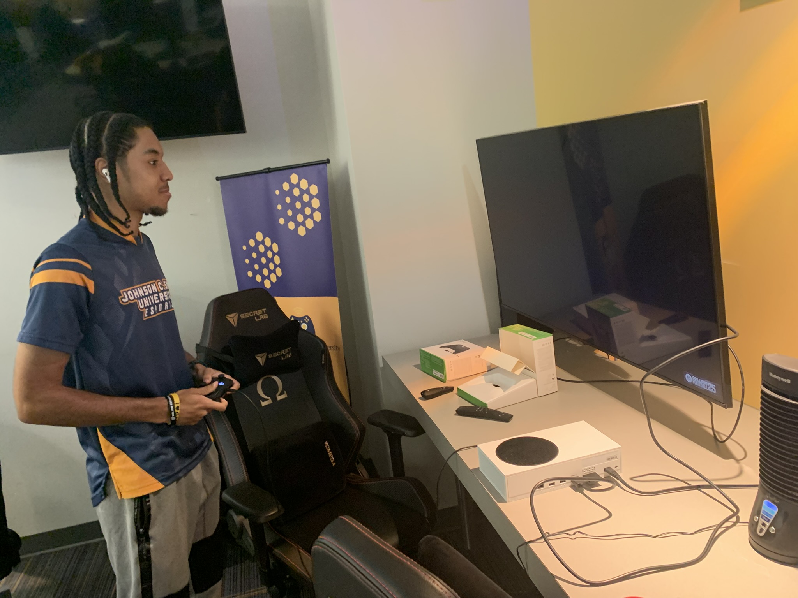
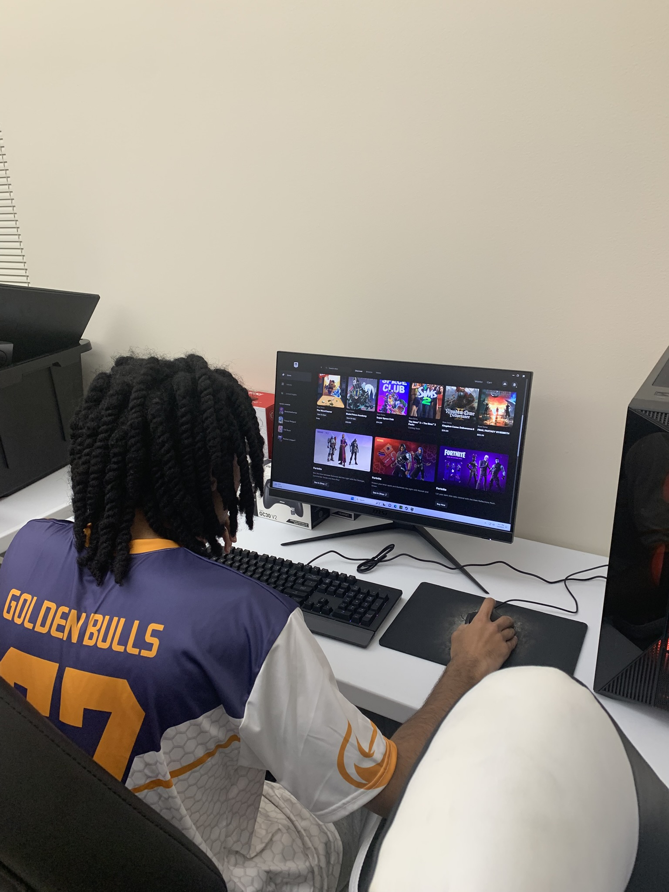
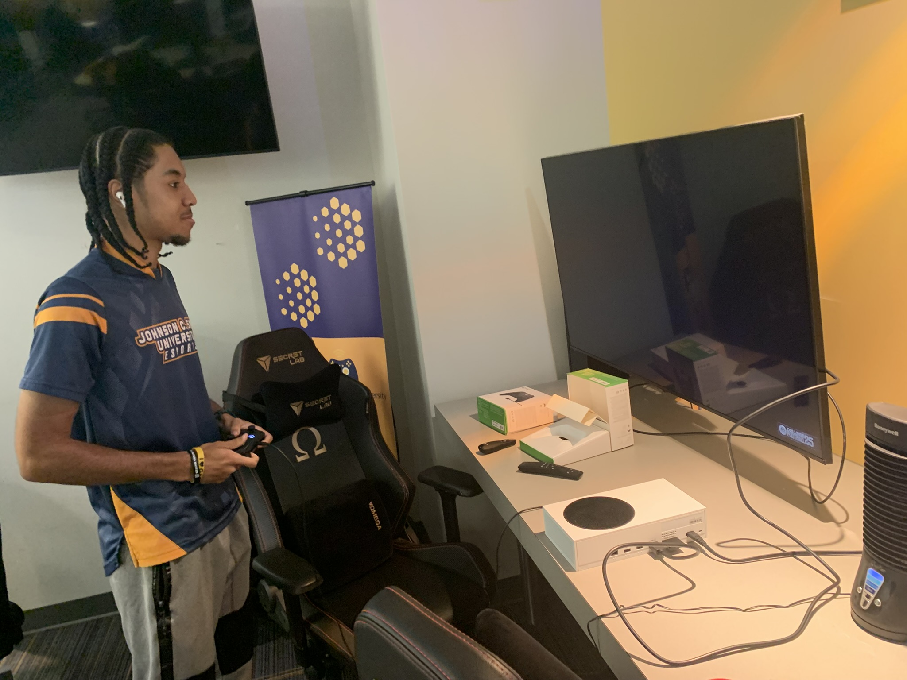
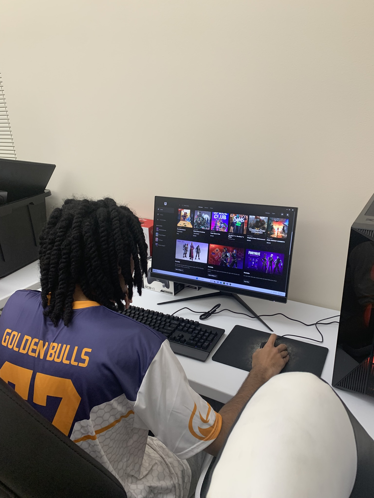

Action Photos


 





Shaun Moore
100 Beatties Ford Road
Charlotte, NC
shaunamoore2904@gmail.com
704-853-4302
4/11/2025
Dear Hiring Manager,
I am excited to apply for the Esports and Gaming role at your company. As someone passionate about esports and gaming, I have always been inspired by your company’s contribution to the gaming industry and its dedication to making immersive experiences for players on a global scale. With my background in lab and event management, combined with my enthusiasm for competitive and casual gaming culture, I am confident in my ability to contribute in a meaningful way to your team.
In my previous experience as a community ambassador and treasurer, I acquired skills that are applicable to the esports and gaming industry. For instance:
My Esports and Gaming Goals are to have a fulfilling career in the Gaming industry, whether that be community based, development based or even competition based.


Dear Dr. Lawson and Mr. McMurray,
I hope this letter finds you well. I wanted to take a moment to express my very sincere gratitude for the opportunity to intern at Bette Rae Thomas Recreational Center and Johnson C. Smith University as an Esports and Gaming Intern.
Thank You for giving me the opportunity to obtain hands on work related to Esports and Gaming at your labs,
The experience I have obtained from these internships have been invaluable and extremely beneficial to my professional development,
I appreciate them very much!
Thank you once again for this amazing opportunity. I look forward to applying what I have learned in my future endeavors.
Sincerely,
Shaun Moore